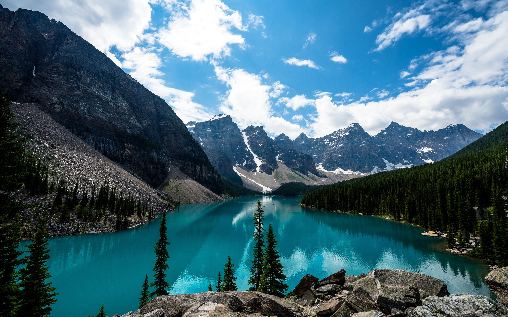

— Дай-ка, Гриша, карандаш.
— Ты обратно не отдашь.
Ни крысам, ни мышам,
Частенько с ними он ведёт
Беседу по душам.
Вода́ (оксид водорода, гидроксид водорода, химическая формула — H2O) — бинарное неорганическое соединение, молекула которого состоит из двух атомов водорода и одного — кислорода, которые соединены между собой ковалентной связью. При нормальных условиях представляет собой прозрачную жидкость, не имеющую цвета (при малой толщине слоя), запаха и вкуса. В твёрдом состоянии называется льдом (кристаллы льда могут образовывать снег или иней), а в газообразном — водяным паром. Вода также может существовать в виде жидких кристаллов (на гидрофильных поверхностях)[7][8].
Вода является хорошим сильнополярным растворителем. В природных условиях всегда содержит растворённые вещества (соли, газы).
Исключительно важна роль воды в глобальном кругообороте вещества и энергии[9], возникновении и поддержании жизни на Земле, в химическом строении живых организмов, в формировании климата и погоды. Вода является важнейшим веществом для всех живых существ на Земле. В среднем в организме растений и животных содержится более 50 % воды[11].
Всего на Земле около 1400 млн км³ воды. Вода покрывает 71 % поверхности земного шара (океаны, моря, озёра, реки, льды — 361,13 млн км²[12][13]). Бо́льшая часть земной воды (97,54 %) принадлежит Мировому океану — это солёная вода, непригодная для сельского хозяйства и питья. Пресная же вода находится в основном в ледниках (1,81 %) и подземных водах (около 0,63 %), и лишь небольшая часть (0,009 %) в реках и озёрах. Материковые солёные воды составляют 0,007 %, в атмосфере содержится 0,001 % от всей воды нашей планеты[14][15]. В составе мантии Земли воды содержится в 10—12 раз больше, чем в Мировом океане[16].

| TOP-LEFT | TOP-RIGHT | Объединяем строки |
|---|---|---|
| BOTTOM-LEFT | BOTTOM-RIGHT | |
| Объединяем столбцы | ||